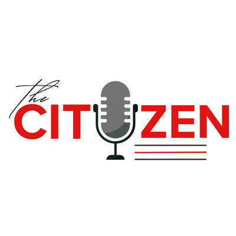

A civic-tech platform by We Aid InitiativeDandalin fasahar zamantakewa daga We Aid InitiativeLearn how government works. Report what's broken in your community. Track the response. Help shape policy. In English and Hausa.Koyi yadda gwamnati ke aiki. Bayar da rahoton abin da ya lalace a cikin al'ummarka. Bi diddigin amsa. Taimaki tsara manufa. A Turanci da Hausa.
Explainers in English and Hausa on how government works and what your rights are.Bayyanannun bayanai a Turanci da Hausa kan yadda gwamnati ke aiki da kuma menene hakkokinka.
LearnKoyaSubmit a governance issue, optionally anonymously, and receive a tracking ID.Aiko da matsalar shugabanci, ko ba tare da suna ba, kuma karbi lambar bin diddigi.
ReportRahotoEvery report moves through five stages. Watch the system in action.Kowane rahoto yana motsawa ta matakai biyar. Duba tsarin a aikace.
TrackBi diddigiPolls, discussions and digital town halls. The community sets the agenda.Kuri'a, tattaunawa da taron jama'a na dijital. Al'umma ce ke saita batun.
DiscussTattaunaEvery report you submit travels through five public statuses. We never lose a report — and we never close one quietly.Kowane rahoto da ka aiko yana tafiya ta matakai biyar na jama'a. Ba ma rasa rahoto — kuma ba ma rufe shi a asirce.
Every report contributes to an open, anonymised dataset that we use to produce policy briefs, advocacy campaigns and dialogues with state and federal counterparts. Citizen voice is the unit of evidence.Kowane rahoto yana ba da gudummawa ga bayanan budewa marasa suna wadanda muke amfani da su don samar da takardun manufofi, yakin neman kira-zuwa-gaba da tarurruka da takwarorinmu a jihohi da tarayya. Muryar dan kasa ita ce naúrar shaida.
Explore the dataBincika bayanai